The core vignettes cover the principal EQUATOR topologies:
single-stream selection, enrollment with permanent parallel
stratification, top-level source convergence, and split-and-recombine
analysis. This article showcases additional, less common flow diagram
structures covered by selecta, including factorial layouts,
hierarchical (nested) exclusion reasons, and other complex
configurations.
n.b.: To ensure correct font rendering and figure sizing, the
grid-based diagrams below are displayed using a vignette-only helper function (queue_flow()) that applies recommended dimensions fromrecdims()via theragggraphics device, with the standard output function applied afterwards (flowchart()). In practice, replace thisqueue_flow()/flowchart()workflow with a call toflowsave()for equivalent printed results:Using
flowsave()ensures that the figure dimensions are always large enough to accommodate the diagram content, and it is the preferred method for saving flow diagram outputs inselecta.
Preliminaries
The manual examples in this vignette are constructed from summary counts. The two data-driven examples build small synthetic datasets inline to illustrate how the same diagrams arise from row-level data.
Factorial (Multi-Split) Designs
A factorial design randomizes (or stratifies) each participant on two factors at once, so that every level of the first factor is crossed with every level of the second. A two-by-two trial, for example, assigns each participant to one of two antiviral arms and to one of two adjuvant arms, yielding four cells.
In selecta, a factorial layout is expressed by chaining
two split steps. The first allocate() (or
stratify()) divides the cohort into the first-factor arms;
the second split then divides each of those arms into the
second-factor sub-arms. The second split is supplied a single count
vector whose entries enumerate the cells in parent-major order—all
sub-arms of the first parent, then all sub-arms of the second, and so
on:
enroll(n = 480) |>
allocate(labels = c("Drug A", "Drug B"), n = c(240, 240)) |> # factor 1
allocate(labels = c("Vaccine", "Placebo"), # factor 2
n = c(120, 120, # Drug A: Vaccine, Placebo
120, 120)) |> # Drug B: Vaccine, Placebo
endpoint("Analyzed")Two nested split levels are the maximum; a third consecutive split is
refused, since deeper nesting is not part of any EQUATOR diagram and
rarely reads clearly on a page. A level can be released with
combine() (see below), after which a further split is
permitted.
Example 1: A Two-by-Two Factorial Trial
The canonical factorial CONSORT diagram crosses two binary
randomizations. The first allocate() carries a
label, which names the allocation box drawn between the
randomized cohort and the first-factor arms; the second
allocate() needs no label, as its sub-arms hang directly
beneath their parents. A subsequent exclude() is given one
count per cell, producing a side box for each leaf arm:
example1 <- enroll(n = 480, label = "Randomized") |>
phase("Allocation") |>
allocate(labels = c("Drug A", "Drug B"), n = c(240, 240),
label = "Antiviral assignment") |>
allocate(labels = c("Vaccine", "Placebo"), n = c(120, 120, 120, 120)) |>
phase("Follow-up") |>
exclude("Discontinued", n = c(8, 6, 7, 9)) |>
phase("Analysis") |>
endpoint("Primary analysis")
flowchart(example1)The grid engine treats the four second-level sub-arms as
leaf columns, centers each first-level parent over its pair of children,
and centers the trunk over all leaves. The per-cell exclusion boxes are
splayed outward in the manner of a standard two-arm diagram: within each
parent, the first sub-arm’s box is placed to the left and the second
sub-arm’s box to the right, keeping the central channel clear.
Example 2: Larger Factorial Grids
The same two-split construction scales to any cell count. A three-by-three design supplies three first-level arms and a nine-element count vector for the second split, again in parent-major order:
example2 <- enroll(n = 900, label = "Randomized") |>
phase("Allocation") |>
allocate(labels = c("Low", "Medium", "High"), n = c(300, 300, 300),
label = "Dose tier") |>
allocate(labels = c("Schedule A", "Schedule B", "Schedule C"),
n = rep(100L, 9L)) |>
phase("Analysis") |>
endpoint("Analyzed")
flowchart(example2)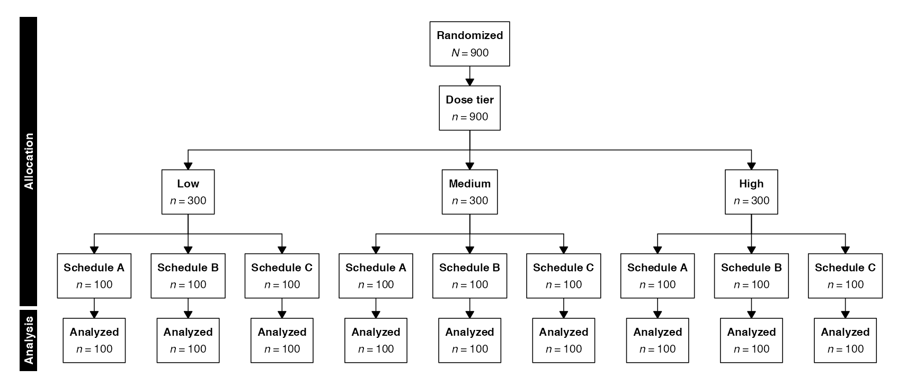
Each parent is centered over its three children, and the fan connectors are symmetric about every parent. Odd and even sub-arm counts are both handled: with three children the parent sits over the middle one, and with two it sits over the midpoint of the pair.
Example 3: Asymmetric Factorial Designs
The two factors need not have the same number of levels. A two-by-three design pairs two first-level strategies with three intensity levels each; the second split therefore receives a six-element vector (two parents times three sub-arms):
example3 <- enroll(n = 600, label = "Randomized") |>
phase("Allocation") |>
allocate(labels = c("Surgical", "Medical"), n = c(300, 300),
label = "Primary strategy") |>
allocate(labels = c("Low", "Standard", "Intensive"),
n = c(100, 100, 100, # Surgical
100, 100, 100)) |> # Medical
phase("Analysis") |>
endpoint("Analyzed")
flowchart(example3)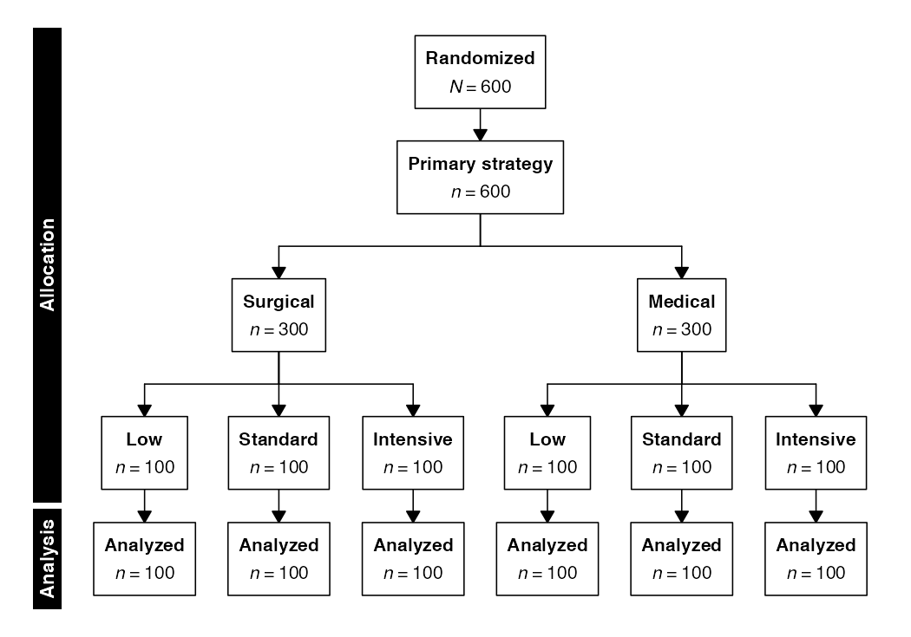
Example 4: Factorial Designs from Row-Level Data
In data mode, each split step receives a column name rather than
explicit labels and counts. A factorial layout is produced by crossing
two categorical columns: the first allocate() splits on the
first factor, and the second allocate() splits each
resulting arm on the second. The cell counts, and any data-driven
exclusion counts, are computed from the data. The dataset below
cross-classifies 800 patients by antiviral assignment and adjuvant
assignment, with eight discontinuations per cell:
n_cell <- 200L
fac_data <- data.table(
id = sprintf("P%04d", seq_len(4L * n_cell)),
antiviral = rep(c("Drug A", "Drug B"), each = 2L * n_cell),
adjuvant = rep(rep(c("Vaccine", "Placebo"), each = n_cell), times = 2L),
discontinued = rep(c(rep(TRUE, 8L), rep(FALSE, n_cell - 8L)), times = 4L)
)
example4 <- enroll(fac_data, id = "id", label = "Randomized") |>
phase("Allocation") |>
allocate("antiviral", label = "Antiviral assignment") |>
allocate("adjuvant") |>
phase("Follow-up") |>
exclude("Discontinued", criterion = discontinued == TRUE) |>
phase("Analysis") |>
endpoint("Primary analysis")
flowchart(example4)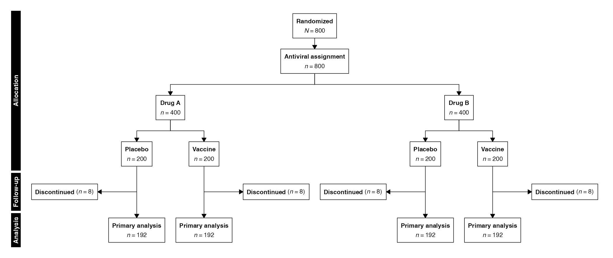
Because the counts are derived from the data, the diagram is reproducible and auditable: re-running the pipeline against an updated dataset refreshes every count automatically. The sub-arm columns are ordered by their factor levels, so the leaf order follows the sorted values of the second column.
Example 5: Pooling Twice into a Single Cohort
A factorial split can be collapsed one level at a time, and
combine() may be applied more than once in sequence. The
first combine() after the second split draws converging
arrows that pool the second-factor sub-arms back into their first-factor
parents, releasing the nested level and leaving one stream per
first-factor arm. A second combine() then pools those
streams in turn, merging the parallel arms into a single analysis
cohort. The optional sublabel prints a second line of
explanatory text beneath the merged box:
example5 <- enroll(n = 360, label = "Randomized") |>
phase("Allocation") |>
allocate(labels = c("Concurrent", "Sequential"), n = c(180, 180),
label = "Timing strategy") |>
allocate(labels = c("Agent A", "Agent B"), n = c(90, 90, 90, 90)) |>
phase("Pooling") |>
combine("Pooled by timing") |>
combine("Combined analysis cohort",
sublabel = "Both timing strategies merged") |>
phase("Analysis") |>
endpoint("Analyzed")
flowchart(example5)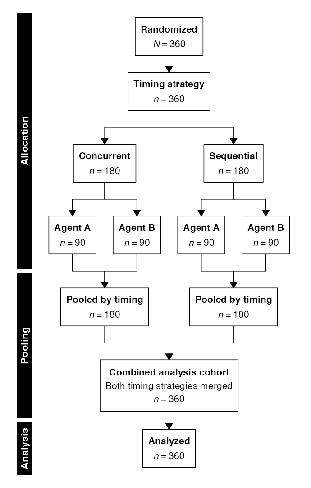
Each combine() releases one level of structure: the
first returns the diagram to two parallel timing streams, and the second
merges those streams into one. Because a released level permits a
further split, the two operations can be interleaved with
allocate() or stratify() to express designs
that cross, pool, and re-split factors at successive stages.
Example 6: Factorial Layouts via the DOT Engine
The Graphviz/DOT engine renders factorial diagrams with the same
nesting and outboard exclusion boxes. Passing
engine = "dot" to flowchart() returns the DOT
source for the two-by-two trial from Example 1:
example6 <- flowchart(example1, engine = "dot")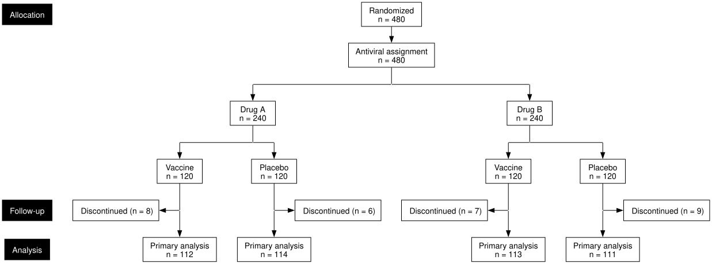
The DOT engine centers each first-level parent over its pair of
sub-arms and splays the two per-cell exclusion boxes outward, matching
the grid engine’s treatment. Orthogonal routing
(ortho = TRUE), count-first labels
(count_first = TRUE), and the typography options described
in the Graphviz Export vignette all
apply to factorial diagrams as well.
Hierarchical (Nested) Exclusion Reasons
An ordinary exclude() step may attach a breakdown of
reasons through its reasons argument. When
reasons is a flat named vector, each entry is a single
reason with its count. When a reason is itself composed of finer
sub-reasons, reasons accepts a named list:
each element is named for a broad reason category, and its value is
either a named vector of sub-reasons or a single count for a category
with no further breakdown. The rendered side box lists each category as
a bulleted parent with its sub-reasons indented beneath as en-dashed
entries.
A flat named vector and an unnamed list serve different purposes and
should not be confused with the nested form. A flat vector
(reasons = c("Reason" = n, ...)) gives a single-level
breakdown; an unnamed list
(reasons = list(vec1, vec2)) supplies one flat vector
per arm after allocate() or
stratify() (see the Split-and-Recombine vignette). The
nested form here uses a named list on a single
stream.
Example 7: Manual Nested Reasons
The example below removes 250 participants before enrollment, grouped under three categories. Two categories carry sub-reasons; the third (“Administrative”) reason is a single count with no breakdown. The sub-reason counts sum to their category total, and the category totals sum to the step count:
example7 <- enroll(n = 1000, label = "Assessed for eligibility") |>
phase("Screening") |>
exclude("Excluded", n = 250,
reasons = list(
"Did not meet inclusion criteria" = c(
"Outside age range" = 70,
"Comorbid condition" = 55,
"Insufficient washout" = 25),
"Declined to participate" = c(
"Time commitment" = 40,
"Travel burden" = 20),
"Administrative" = 40),
included_label = "Enrolled") |>
phase("Analysis") |>
endpoint("Analysis cohort")
flowchart(example7)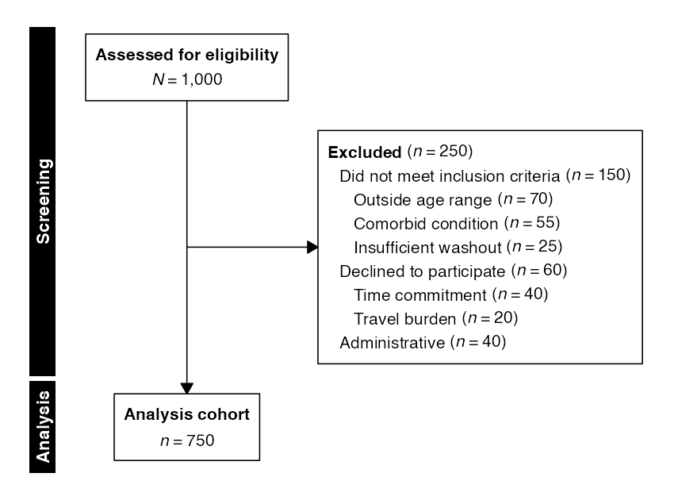
By default, a category whose only member is a single sub-reason is
collapsed onto one line; the collapse_singletons = FALSE
argument keeps such a category and its lone sub-reason on separate
lines.
Example 8: Two-Column Reasons from Row-Level Data
In data mode, a hierarchical breakdown is produced by naming two
columns—a reason column and a sub-reason column—in the
reasons argument:
reasons = c("reason", "subreason"). The excluded rows are
cross-tabulated by the two columns into the same nested structure, with
each reason’s sub-reasons and their counts derived from the data:
review_data <- data.table(
record_id = sprintf("R%04d", seq_len(1000L)),
excluded = c(rep(TRUE, 220L), rep(FALSE, 780L)),
reason = c(rep("Ineligible study design", 130L),
rep("Insufficient reporting", 90L),
rep(NA_character_, 780L)),
subreason = c(rep("Case report", 70L), rep("Narrative review", 60L),
rep("No usable outcome", 50L), rep("No variance estimate", 40L),
rep(NA_character_, 780L))
)
example8 <- enroll(review_data, id = "record_id",
label = "Records identified") |>
phase("Screening") |>
exclude("Records excluded", criterion = excluded == TRUE,
reasons = c("reason", "subreason"),
included_label = "Records retained") |>
phase("Synthesis") |>
endpoint("Studies in synthesis")
flowchart(example8)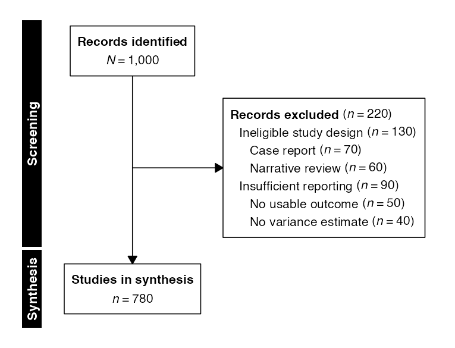
A single column name (reasons = "reason") yields a flat
breakdown instead; the second column is what introduces the second
level. The same two-column form may be supplied after a split, in which
case the cross-tabulation is performed per arm with a shared sub-reason
ordering.
Example 9: Nested Reasons via the DOT Engine
The Graphviz/DOT engine renders the same two-level breakdown, with bulleted parent reasons and en-dashed sub-reasons inside the exclusion node:
example9 <- flowchart(example7, engine = "dot")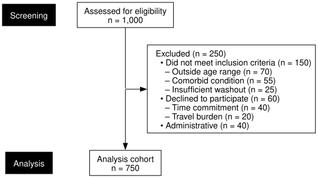
The plain-text label path used here centers reliably across fonts and
backends, prefixing each parent reason with a bullet and each sub-reason
with an en-dash. Passing bullets = FALSE to
flowchart() removes those markers and separates the levels
by indentation alone; this applies to flat and nested reason breakdowns
alike, as well as to the per-source counts of a PRISMA flow. For inline
italic and bold emphasis, formatting = "rich" switches to
Graphviz’s HTML-like labels, as described in the Graphviz Export vignette.
Visual Customization
Every grid rendering function—flowchart(),
flowsave(), and the measurement helper
recdims()—accepts a common set of parameters controlling
the appearance of the diagram. These apply uniformly across all flow
topologies. The Graphviz/DOT engine has its own styling arguments,
documented in the Graphviz Export
vignette.
| Parameter | Description | Default |
|---|---|---|
cex |
Font size multiplier for main text | 0.85 |
cex_side |
Font size multiplier for side boxes | Same as cex
|
cex_phase |
Font size multiplier for phase labels | 0.9 |
count_first |
Bold count before label in all boxes | FALSE |
box_fill |
Fill color for main boxes | "white" |
side_fill |
Fill color for side (exclusion) boxes | "white" |
border_col |
Border color for all boxes | "black" |
arrow_col |
Color for connector arrows | "black" |
phase_fill |
Fill color for phase strips | "black" |
phase_text_col |
Text color for phase labels | "white" |
font_family |
Font family for all text | "Helvetica" |
phase_multiline |
Wrap long phase labels across lines to fit their band | TRUE |
phase_max_lines |
Maximum wrapped lines per phase label | 3 |
number_format |
Locale preset ("us", "eu",
"space", "none") or
c(big, decimal) pair |
options(selecta.number_format), falls back
to "us"
|
vpad |
Vertical spacing between elements (inches) | 0.25 (or options(selecta.vpad)) |
margin |
Fixed margin on all sides (inches) | 0.25 |
The examples below apply these parameters to a representative two-arm trial:
example10 <- enroll(n = 600, label = "Assessed for eligibility") |>
phase("Enrollment") |>
exclude("Excluded", n = 120,
reasons = c("Did not meet criteria" = 80,
"Declined to participate" = 40),
included_label = "Randomized") |>
phase("Allocation") |>
allocate(labels = c("Intervention", "Control"), n = c(240, 240)) |>
phase("Follow-up") |>
exclude("Discontinued", n = c(18, 22)) |>
phase("Analysis") |>
endpoint("Analyzed")Example 10: Custom Font Sizes
For poster presentations or supplementary figures, font sizes can be scaled independently for the main text, side boxes, and phase labels:
flowchart(example10, cex = 1.0, cex_side = 0.8, cex_phase = 1.0)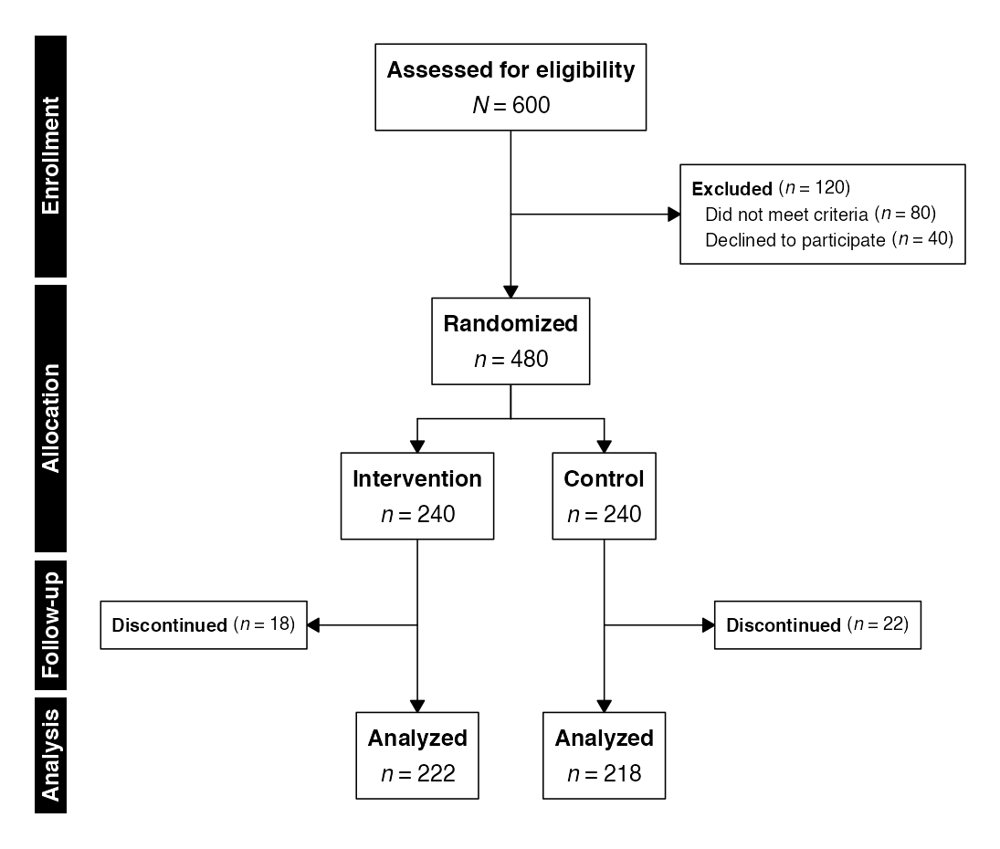
Example 11: Custom Colors
Six independent color parameters control the appearance of the diagram. The example below applies a coordinated blue palette in which the main and side boxes share a pale blue fill, the borders and arrows are rendered in a deeper navy, and the phase strips invert this with a navy fill and white text:
flowchart(example10,
box_fill = "#f0f5ff",
side_fill = "#e8eef9",
border_col = "#1a365d",
arrow_col = "#2c5282",
phase_fill = "#2c5282",
phase_text_col = "#ffffff")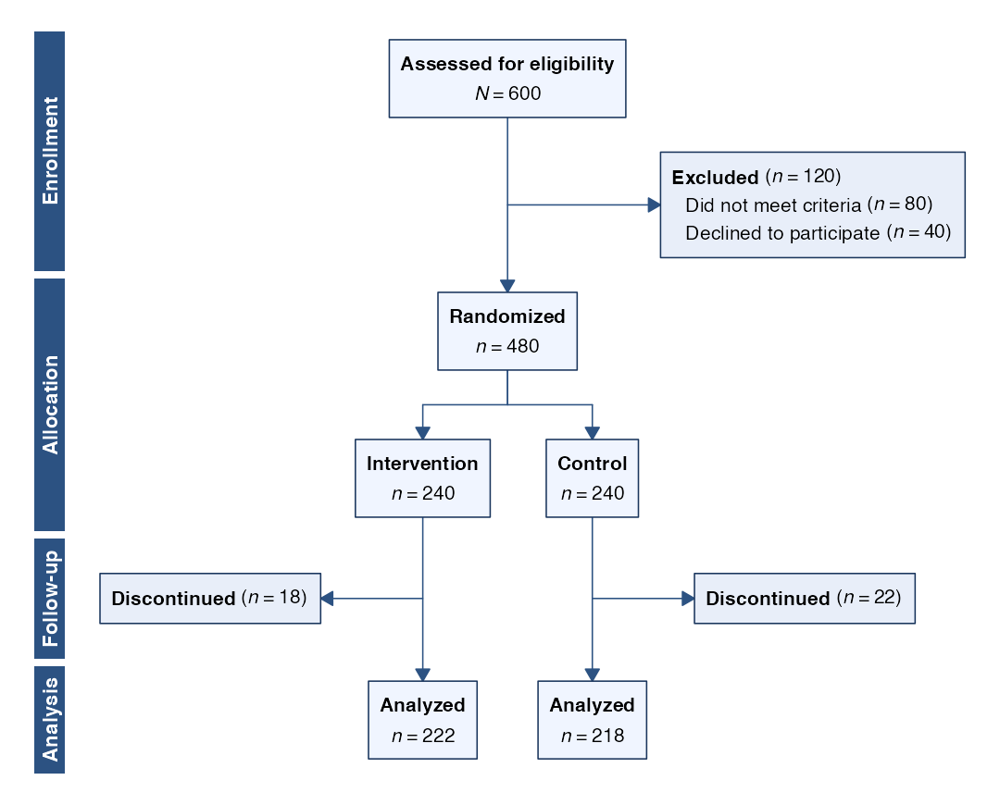
Each parameter accepts any color specification recognized by
grDevices (named colors, hex codes, or rgb()
calls). The defaults (box_fill = "white",
side_fill = "white", border_col = "black",
arrow_col = "black", phase_fill = "black",
phase_text_col = "white") reproduce the standard EQUATOR
style.
Example 12: Font Family
The font_family argument sets the typeface used for
every element of a grid-rendered diagram. It accepts the portable
generic families recognized by the R graphics
device—"sans", "serif", and
"mono"—as well as any installed system font name; the
default, "Helvetica", is a sans-serif face. Generic
families are recommended for reproducibility, as they resolve to an
appropriate face on every platform. The example below renders the trial
in a serif typeface:
flowchart(example10, font_family = "serif")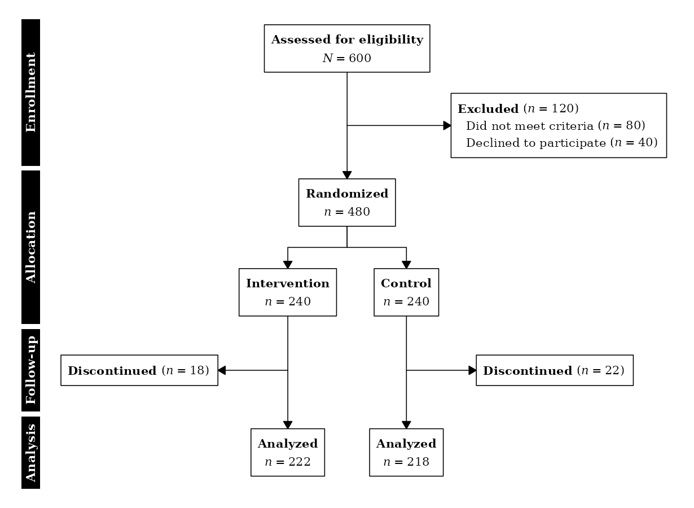
Because box dimensions are derived from the metrics of the selected
font, the layout adjusts automatically to the chosen typeface; no manual
resizing is required. The same argument is accepted by
flowsave() and, for the Graphviz engine, by the DOT export
functions, where the serif family corresponds to
"Times-Roman".
Example 13: Regional Number Formatting
Counts are formatted with a US thousands separator by default
(1,200). Three additional presets are available: EU-style
formatting (1.200), SI/ISO 31-0 thin spaces
(1 200), and no separator at all (1200). The
number_format argument applies to any rendering function.
The example below uses a manually constructed cohort sized to make the
separators visually prominent at every node, rendered in EU style:
example13 <- enroll(n = 25840, label = "Patients screened") |>
phase("Screening") |>
exclude("Did not meet eligibility criteria", n = 8420,
reasons = c("Age outside range" = 3210,
"Comorbidity exclusion" = 2840,
"Concurrent treatment" = 2370),
included_label = "Eligible") |>
exclude("Declined to participate", n = 1820,
included_label = "Consented") |>
phase("Allocation") |>
allocate(labels = c("Active", "Standard of care"),
n = c(7800, 7800)) |>
phase("Follow-up") |>
exclude("Lost to follow-up", n = c(1240, 1310)) |>
exclude("Discontinued intervention", n = c(250, 180)) |>
phase("Analysis") |>
endpoint("Analyzed")
flowchart(example13, number_format = "eu")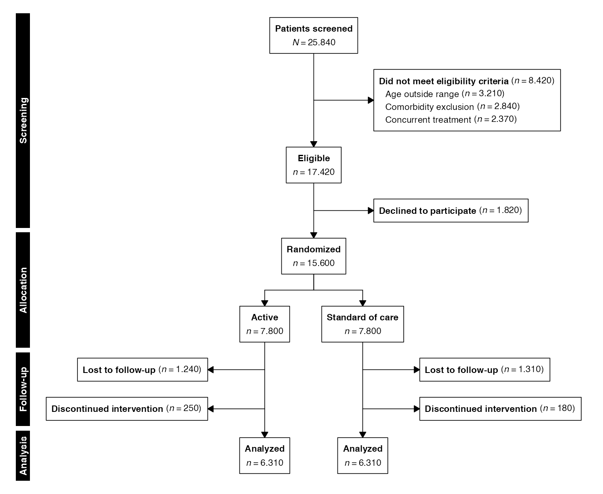
A custom two-element vector c(big.mark, decimal.mark) is
also accepted in place of a named preset.
Global Options
Two appearance settings may be fixed for an entire session rather
than passed to every call. The number format and the vertical padding
between elements each have a global option that propagates to every
subsequent flowchart(), flowsave(), and
recdims() call, as well as to the DOT engine:
options(selecta.number_format = "space") # SI/ISO thin-space separators
options(selecta.vpad = 0.35) # looser vertical spacing (default 0.25)Increasing vpad is useful for vertically dense
diagrams—deep factorial designs, or split-and-recombine layouts with
large per-stratum side boxes—where the default spacing would otherwise
crowd the boxes. Per-call overrides take precedence over the global
option.
Multi-Line Phase Labels
Phase labels are drawn rotated within the vertical strips at the left
margin, so a descriptive label may be longer than the group of boxes it
spans. By default such a label is wrapped across several stacked lines,
occupying additional strip width rather than forcing the surrounding
diagram taller; the phase_max_lines argument caps the
number of wrapped lines, with any remainder collapsed into the final
line. The example below pairs each stage with an explanatory phrase:
Example 14: Wrapped Phase Labels
example14 <- enroll(n = 1200, label = "Assessed for eligibility") |>
phase("Enrollment and baseline assessment") |>
exclude("Excluded", n = 300,
reasons = c("Not meeting criteria" = 160,
"Declined to participate" = 90,
"Other reasons" = 50),
included_label = "Eligible cohort") |>
phase("Randomized allocation to study arms") |>
allocate(labels = c("Drug A", "Placebo"), n = c(450, 450)) |>
phase("Post-randomization follow-up") |>
exclude("Lost to follow-up", n = c(20, 20)) |>
phase("Intention-to-treat analysis") |>
endpoint("Analyzed")
flowchart(example14)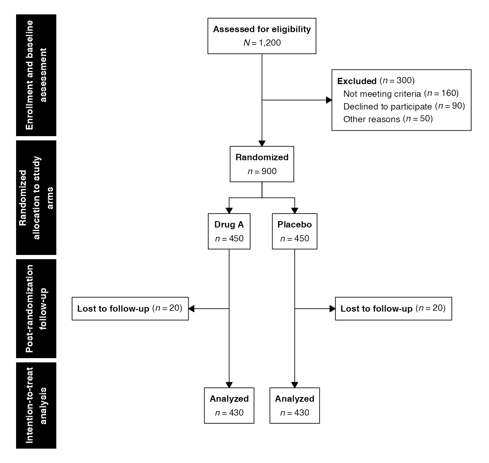
Wrapping may be disabled with phase_multiline = FALSE,
which forces every label onto a single line. A line break may also be
placed explicitly with the newline character "\n", which is
honored whether or not automatic wrapping is active. Explicit breaks
afford precise control over where a label divides:
Example 15: Explicit Line Breaks
example15 <- enroll(n = 1200, label = "Assessed for eligibility") |>
phase("Enrollment\nand\nbaseline assessment") |>
exclude("Excluded", n = 300, included_label = "Eligible cohort") |>
phase("Allocation") |>
allocate(labels = c("Drug A", "Placebo"), n = c(450, 450)) |>
phase("Analysis") |>
endpoint("Analyzed")
flowchart(example15)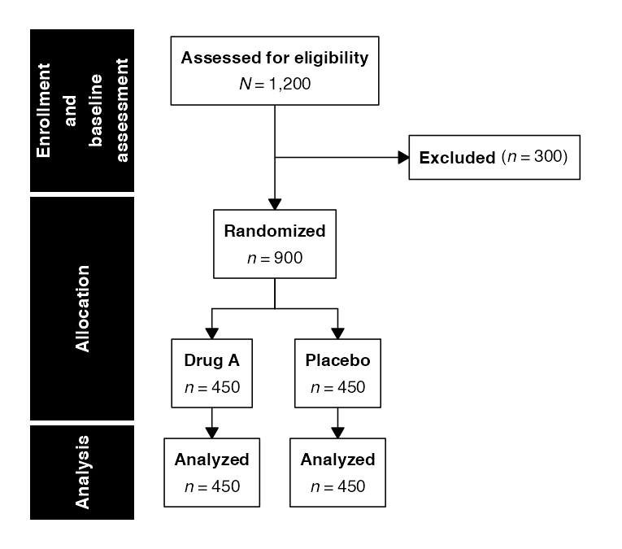
A label short enough to sit beside its boxes is left untouched, and the strip retains its standard width; wrapping engages only where a label would otherwise exceed the height available to it.
Further Reading
- Enrollment Diagrams: CONSORT, STROBE, and STARD diagrams with permanent parallel arms
- Systematic Reviews: PRISMA and MOOSE diagrams with top-level source convergence
- Split-and-Recombine Diagrams: Split topologies that fan out and converge back to a single stream
- Graphviz Export: DOT output for Graphviz/DiagrammeR rendering
- Gallery: General gallery showing all figure types